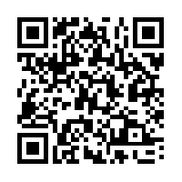

Sensibilisation aux permissions des sites Web
Accéder au site Web

Geolocalisation
Voir sur Google Maps
Contenu du presse-papier
Note Importante
- Ce site web est destiné uniquement à des fins éducatives pour illustrer comment les sites web peuvent accéder et afficher les données de localisation.
- Vos données de localisation ne sont ni stockées ni envoyées ailleurs ; tout se passe localement sur votre appareil.
- Soyez toujours prudent lors de l'octroi d'autorisations à des sites web et des applications. N'accordez l'accès qu'à des sources de confiance.